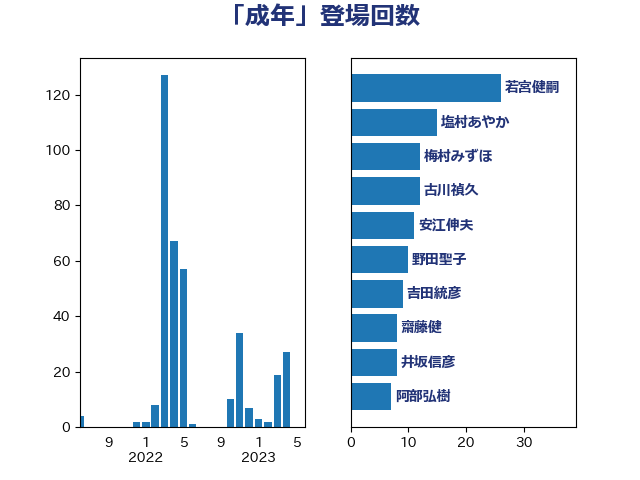

単語「成年」

| 上川陽子 | 自由民主党 | 90 回 |
| 若宮健嗣 | 自由民主党 | 26 回 |
| 井上信治 | 自由民主党 | 22 回 |
| 高良鉄美 | 無所属 | 21 回 |
| 古屋範子 | 公明党 | 16 回 |
| 塩村あやか | 立憲民主党 | 13 回 |
| 柚木道義 | 立憲民主党 | 13 回 |
| 古川禎久 | 自由民主党 | 12 回 |
| 山添拓 | 日本共産党 | 12 回 |
| 川合孝典 | 国民民主党 | 12 回 |
| 大西健介 | 立憲民主党 | 10 回 |
| 安江伸夫 | 公明党 | 10 回 |
| 宮崎政久 | 自由民主党 | 10 回 |
| 野田聖子 | 自由民主党 | 10 回 |
| 串田誠一 | 日本維新の会 | 9 回 |
| 吉田統彦 | 立憲民主党 | 9 回 |
| 國重徹 | 公明党 | 7 回 |
| 盛山正仁 | 自由民主党 | 7 回 |
| 菅義偉 | 自由民主党 | 7 回 |
| 伊藤孝江 | 公明党 | 6 回 |
| 山田勝彦 | 立憲民主党 | 6 回 |
| 福島みずほ | 社会民主党 | 6 回 |
| 伊佐進一 | 公明党 | 5 回 |
| 川田龍平 | 立憲民主党 | 5 回 |
| 磯崎仁彦 | 自由民主党 | 5 回 |
| 階猛 | 立憲民主党 | 5 回 |
| 上野通子 | 自由民主党 | 4 回 |
| 井坂信彦 | 立憲民主党 | 4 回 |
| 寺田学 | 立憲民主党 | 4 回 |
| 岸田文雄 | 自由民主党 | 4 回 |
| 津島淳 | 自由民主党 | 4 回 |
| 浜地雅一 | 公明党 | 4 回 |
| 田村憲久 | 自由民主党 | 4 回 |
| 鎌田さゆり | 立憲民主党 | 4 回 |
| 中曽根康隆 | 自由民主党 | 3 回 |
| 大野泰正 | 自由民主党 | 3 回 |
| 岸真紀子 | 立憲民主党 | 3 回 |
| 清水貴之 | 日本維新の会 | 3 回 |
| 角田秀穂 | 公明党 | 3 回 |
| 鰐淵洋子 | 公明党 | 3 回 |
| 北側一雄 | 公明党 | 2 回 |
| 吉田とも代 | 日本維新の会 | 2 回 |
| 大石あきこ | れいわ新選組 | 2 回 |
| 宮本岳志 | 日本共産党 | 2 回 |
| 平木大作 | 公明党 | 2 回 |
| 後藤茂之 | 自由民主党 | 2 回 |
| 松島みどり | 自由民主党 | 2 回 |
| 柳ヶ瀬裕文 | 日本維新の会 | 2 回 |
| 清水真人 | 自由民主党 | 2 回 |
| 湯原俊二 | 立憲民主党 | 2 回 |
| 熊谷裕人 | 立憲民主党 | 2 回 |
| 石川博崇 | 公明党 | 2 回 |
| 福重隆浩 | 公明党 | 2 回 |
| 稲田朋美 | 自由民主党 | 2 回 |
| 赤澤亮正 | 自由民主党 | 2 回 |
| 高見康裕 | 自由民主党 | 2 回 |
| 三ッ林裕巳 | 自由民主党 | 1 回 |
| 中谷一馬 | 立憲民主党 | 1 回 |
| 伊波洋一 | 無所属 | 1 回 |
| 伊藤孝恵 | 国民民主党 | 1 回 |
| 吉川赳 | 無所属 | 1 回 |
| 嘉田由紀子 | 無所属 | 1 回 |
| 城井崇 | 立憲民主党 | 1 回 |
| 堤かなめ | 立憲民主党 | 1 回 |
| 大口善徳 | 公明党 | 1 回 |
| 大河原まさこ | 立憲民主党 | 1 回 |
| 山下雄平 | 自由民主党 | 1 回 |
| 山井和則 | 立憲民主党 | 1 回 |
| 山本香苗 | 公明党 | 1 回 |
| 山田賢司 | 自由民主党 | 1 回 |
| 平沼正二郎 | 自由民主党 | 1 回 |
| 本村伸子 | 日本共産党 | 1 回 |
| 梅村みずほ | 日本維新の会 | 1 回 |
| 森山浩行 | 立憲民主党 | 1 回 |
| 漆間譲司 | 日本維新の会 | 1 回 |
| 田中健 | 国民民主党 | 1 回 |
| 田村まみ | 国民民主党 | 1 回 |
| 畦元将吾 | 自由民主党 | 1 回 |
| 白石洋一 | 立憲民主党 | 1 回 |
| 竹谷とし子 | 公明党 | 1 回 |
| 義家弘介 | 自由民主党 | 1 回 |
| 赤池誠章 | 自由民主党 | 1 回 |
| 足立康史 | 日本維新の会 | 1 回 |
| 道下大樹 | 立憲民主党 | 1 回 |
| 鈴木義弘 | 国民民主党 | 1 回 |